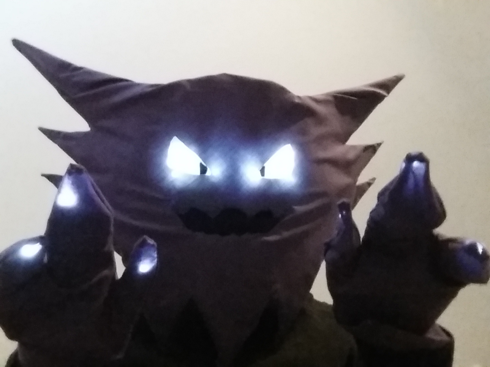

Current Projects:
I worked with after-school K-12 programs in San Francisco and Oakland as an undergrad, while also interacting with different groups on campus. One potentially troublesome thing that occurred
everyday was tracking attendance, especially for those who were participating for credit over the
course of the semester. The idea behind the Volunteer Manager is to have an easy way to track
attendance in addition to other aspects of the daily schedule, such as organizing transportation
to and from volunteer sites. Furthermore, organizations will have the flexibility of shaping the
app to meet their specific needs, such as if volunteers are required to fill out progress sheets
for one-on-one tutoring.
Wearable Electronics: Halloween Mask and Gloves
Using some cardboard, PVC sheet, foam, fabric, and lots of tape, I added a simple LED array to create my Halloween costume. The character, Haunter, is stylized as a cartoonish ghost, which made it easier to accept ragged/rough cuts in the fabric and to pull off the overall look.


Unfortunately, I did not properly align the LEDs and fabric eye openings, so there appears to be some extra glow outside of the eyes. The LEDs were powered by 3V, which was enough.

Finally, I soldered some more LEDs for a simple light effect on a pair of gloves. Given more time, I would have hoped to make the entire glove and mask uniformly glow, but I was satisfied with the result.
Wearable Electronics: Motorized Helmet and Driver-controlled LEDs
The dollar store has some hit-or-miss stock, but I found an obvious Star Wars knockoff item that I hope to turn into a fully "servo'd" helmet that opens up in an Iron Man fashion. I am currently working out a three-piece open/close mechanism, more so for form than function. Updated previsualizations will be up soon.
Past Projects:
Our group wanted to add an extra level of connectivity to commercially-available baby monitors,
specifically for addressing Sudden Infant Death Syndrome (SIDS) and alerting to parents when
breathing has stopped. After interviewing parents, one issue that came up was the abrupt nature of
monitor alarms that might occur for false readings. We wanted to utilize mobile technology to
enable the parent to receive alerts, for example, even if the parent were outside in the yard
while the baby was napping indoors. We produced a prototype that sent SMS text alerts to parents'
phones when detected breathing dropped for about 20 seconds. If a parent wanted to see their
child's breathing rate in real-time, I created a simple webpage integrated with Plotly that
graphed our physical sensor data. Ideally, a single, fully developed app would be responsible for
receiving alerts and displaying breathing data, but our time constraints limited us to separate
native SMS and web page data display.


Landscape Evolution Simulations in MATLAB


GIS Distribution of Argia vivida in California

More updates soon